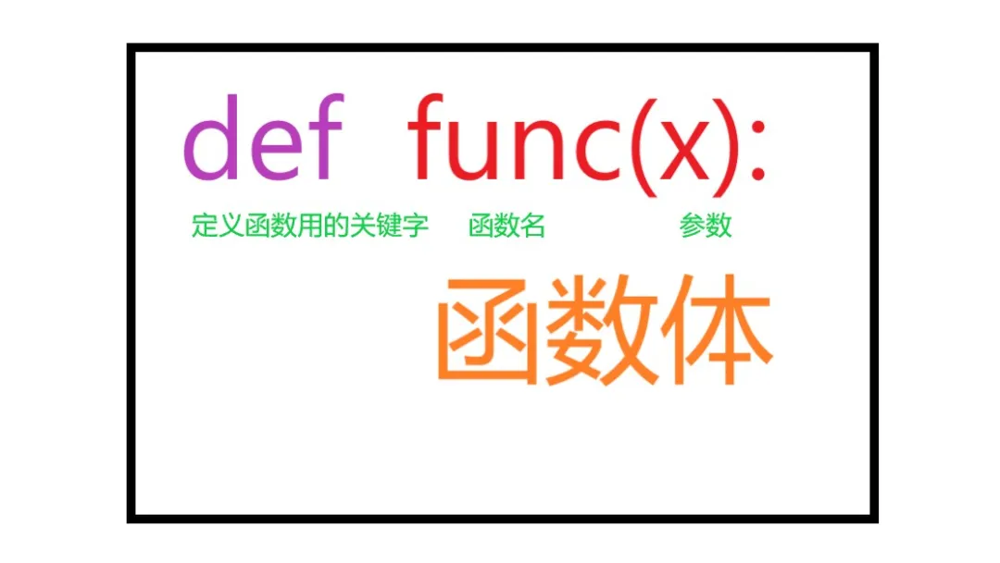
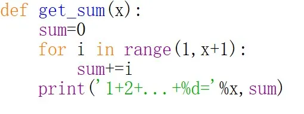
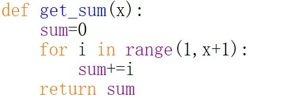
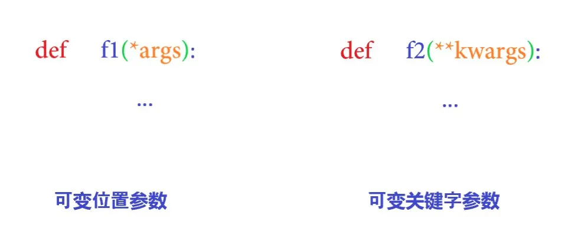
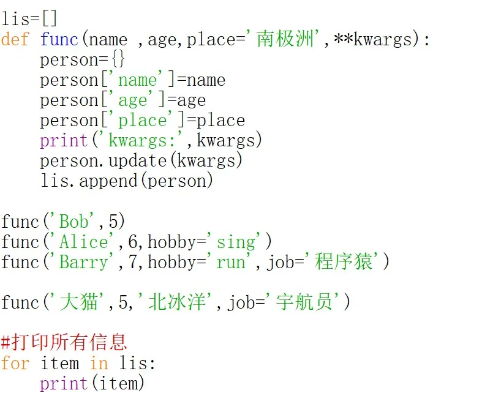
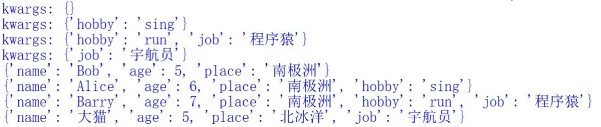

函数，化繁为简-Python基础连载（十二）
开篇
考虑这么一个问题：
求解1到4之和
到现在，你已经学习了分支循环以及六大数据类型，所以这题很简单啦，你应该能很轻松的写出下面的代码：
1 | sum=0 |
bingo！
那如果问题改为求解1到10之和呢？
也不难对吧，只需对range()稍作修改：
1 | sum=0 |
那如果问题改为求解1到100，1到1000之和呢？
同样是修改range()中的数字即可！
仔细思考一下，你会发现，上面的几个问题其实可以归纳为一个问题：求和
每个问题的解答代码其实都只是更改了range()中的一个数字
如果对于每一个问题，我们都去写一段上面的代码，那简直是灾难！因为会出现大量重复的代码。
所以，函数应运而生！
初识函数
函数的结构如下：

其中的def是关键字，func是可自定义的函数名，x是函数的参数，可以有多个（这里的举的栗子只有一个），函数体内书写你的代码，这段代码规定了函数要做什么事。
如果你是初学者，看了上面的定义之后可能还是一头雾水。没关系，看个栗子感受一下：
我们将开篇中提到求和问题写成函数的形式：

我们给函数取了名字叫做get_sum，给函数设置了一个参数x
函数的功能是求解1到x之和
注意，写完这个函数之后，什么也看不到，因为你只是定义好了函数，而函数只有在被调用时才会执行函数体内的语句
现在来尝试调用函数，我们分别给x传入4和10，用于求解1到4之和与1到10之和：
1 | #求解1到4之和 |
输出
1 | 1+2+...+4= 101+2+...+10= 55 |
看，使用了函数之后，代码变得简洁起来。
函数的返回值
其实，每个函数都有返回值。在关键字return后面写需要返回的变量名。如果函数没有用return，那默认返回None。
返回值也是个值，所以可以将这个值赋值给变量，此时称这个变量是用来接收返回值的变量。
我们上面的求和问题中，函数是没有写return的，因此函数的返回值应该是None，我们来验证这一点：
1 | #求解1到4之和 |
输出
1 | None |
我们可以给get_sum函数指定返回值，比如可以指定返回求和结果sum，于是我们可以稍微修改下函数的定义：

此时，再次调用函数：
1 | #求解1到4之和 |
输出
1 | 10 |
多个参数
函数的参数可以有多个，比如求解两数之和，我们可以这样定义函数：
1 | #求解两数之和，即：x+y |
这里的参数有两个，分别是x和y。
多个返回值
函数的返回值也可以有多个，比如同时求解两数之和与两数之差：
1 | def cal(x,y): |
这里分的返回值是两数之和与两数之差。
此时我们可以用一个或者两个变量来接收返回值：
【用两个变量接收返回值】这个很符合我们的思维，因为函数的返回值是两个，所以用两个变量来接收返回值
1 | add,minus=cal(1,3) |
输出
1 | 4 -2 |
【用一个变量接收返回值】
1 | result=cal(1,3) |
输出
1 | (4, -2) |
返回值是一个元组，Python的灵活性在这里又一次被体现。
形参与实参
1 | def get_sum(x): |
在这个栗子中，get_sum函数中()内的x是形参，而z是实参。
顾名思义，形参就是形式上的参数，在函数定义好之后，形参并没有任何实际值。只有在调用函数时，才将实参传给形参，此时形参将得到的值收下，之后函数内部凡是出现形参名字的地方都具有传入的实参的值。
总结来说：
形参是函数定义时的参数，实参是函数调用时传给函数的参数
你还要了解，形参和实参是可以同名的，因此上例中的z即使改名为x也可以得到相同的结果。
请再次体会一下上面的栗子，以加深理解。
默认参数
假设要录入”南极小学”六年级一班全体同学的姓名、年龄以及出生地信息，将每个同学的信息作为一个字典，将所有同学的信息一起存入列表。
为了方便，假设该班共有3个同学，则可写出如下代码：
1 | lis=[] |
输出
1 | {'name': 'Bob', 'age': 5, 'place': '南极洲'}{'name': 'Alice', 'age': 6, 'place': '南极洲'}{'name': 'Barry', 'age': 7, 'place': '南极洲'} |
仔细观察，你会发现，每个同学的出生地都是”南极洲”。既然相同，那就可以将形参place设置为默认参数，默认值为”南极洲”，调用函数传参时就可以不写place了，这样做可以减少无谓的工作量。
于是代码如下：
1 | lis=[] |
当然，如果此时突然新转来了一个同学“大猫”到该班中，并且大猫同学出生在”北冰洋”，那么就不能使用默认的place了。解决方法很简单，只需像正常传参那样给place传入”北冰洋”即可，代码如下：
1 | lis=[] |
输出结果
1 | {'name': 'Bob', 'age': 5, 'place': '南极洲'}{'name': 'Alice', 'age': 6, 'place': '南极洲'}{'name': 'Barry', 'age': 7, 'place': '南极洲'}{'name': '大猫', 'age': 5, 'place': '北冰洋'} |
需要注意的是，在定义一个函数时，如果存在位置参数（这里的name和age就是位置参数，位置参数的详细讲解就在下一部分），那么必须将默认参数放到最后，就像本栗中，将默认参数place放在了最后。
1 | def func(name ,age,place='南极洲'): |
位置参数
其实，在上一部分【默认参数】的栗子中，name和age就是位置参数。
对于位置参数来说，在传参时，各个参数的实际值与其位置下标必须一一对应，否则就可能导致程序输出信息有误或者程序直接报错。
比如我们在给大猫同学录入信息时可以这样写：
1 | func('大猫',5,'北冰洋') |
当然也可以指明'place'：
1 | func('大猫',5,place='北冰洋') |
但绝对不能更换name和age的位置，否则年龄就和姓名颠倒了,看下面的反例：
假设我们在传参时互换了name和age的位置
1 | func(5,'大猫',place='北冰洋') |
则输出结果中关于大猫同学的信息就会变为：
1 | {'name': 5, 'age': '大猫', 'place': '北冰洋'} |
这表示的是一个叫5的同学，年龄为’大猫’，闹笑话了吧~
而如果在其他程序中也犯这样的错误，可能不只是闹笑话，程序可能直接崩溃（因为有些参数类型不同，在函数内部的语句执行时不能对应到相应的数据类型，从而导致程序报错）。
关键字参数
在传参时，如果不单单传入值，还将对应的参数名字也一并传入，那么这就是关键字参数了。
还是拿南极小学的栗子来说明，如果我们在录入大猫同学的信息时这样传参：
1 | func(name='大猫',age=5,place='北冰洋') |
由于使用了关键字参数，因此也可以这样传参：
1 | func(age=5,name='大猫',place='北冰洋') |
看，调换了name和age的位置，仍然可以！
甚至你也可以调换默认参数place的位置（此时是在修改默认参数的前提下进行的，在这种情况下，默认参数其实也算是一个关键字参数）：
1 | func(name='大猫',place='北冰洋',age=5) |
但是，当位置参数和关键字参数同时存在时，位置参数必须在关键字参数前面。
举个反例：
1 | func(age=5,'Bob') |
这个写法是不被Python允许的，因为关键字参数age放在了位置参数name前面。
可变参数
所谓可变参数，就是指在定义函数时，参数的个数并没有被写死，而是可以动态变化的。在上面所介绍的栗子中，其实都是不可变参数，因为参数的个数在定义函数的那一刻就被固化了
正如不可变参数可分为位置参数和关键字参数那样，可变参数也有可变位置参数和可变关键字参数。
可变位置参数前面加一个*，可变关键字参数前面加两个*。

注意这里的args和kwargs是约定俗成的名字，你也可以改成任何合法的名字，但不推荐。
传入可变位置参数的值会被保存在一个元组中，而传入可变关键字参数的值会被保存在一个字典中。
下面还是举两个栗子来分别说明：
**1.**【可变位置参数实例】
1 | def add(a,b): |
这个函数的功能是求解两数之和，如果我们想要求大于两个的数字之和，比如3数之和，4数之和等，由于不确定到底有多少个数，因此可以在定义函数时设置一个可变参数。
那是设置可变位置参数还是可变关键字参数呢？
其实这个要根据实际情况以及方便性等来确定。我们这里只是求解多个数字的和，并不涉及到其他诸如信息存取的操作，因此为了更方便，可以设置可变位置参数。
于是，最终的函数定义如下：
1 | def add(a,b,*args): |
尝试调用函数：
1 | add(1,2,3,4,5) |
得到如下输出：
1 | args: (3, 4, 5) |
**2.**【可变关键字参数实例】
还是拿南极小学那个栗子来说，如果不单单可以录入name、age和place，而且还可以录入每个同学的爱好hobby、未来想从事的的职业job，当然新增的这两个是可选的，同学可以只录入hobby，可以只录入job，可以同时录入两者，也可以同时不录入这两者。在这个场景下，就可以可变关键字参数了。

得到的输出结果如下：

在上面的代码中，Bob同学只录入了必选项，而其余三名同学都或多或少的录入了可选项，因此只有Bob同学的kwargs为空字典。